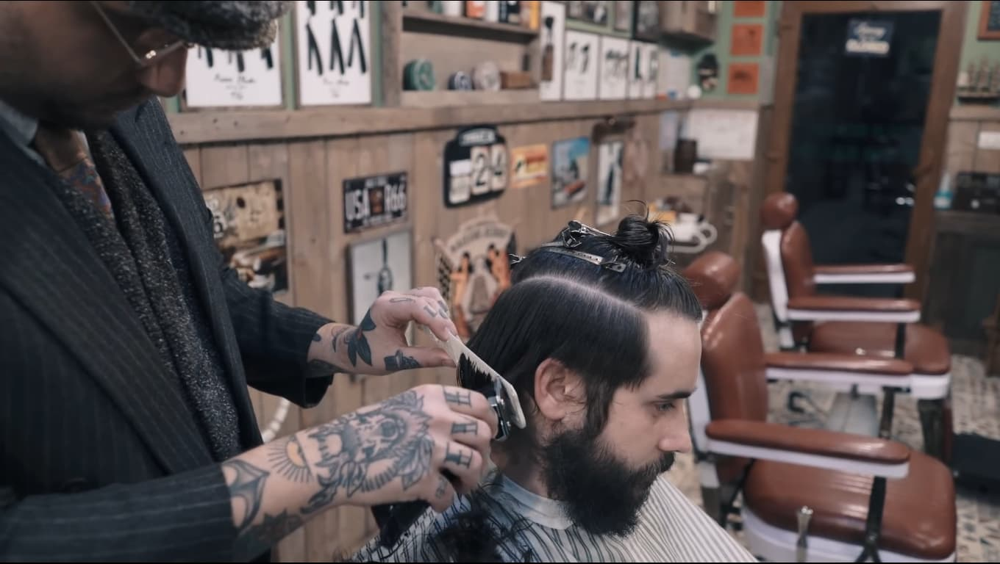
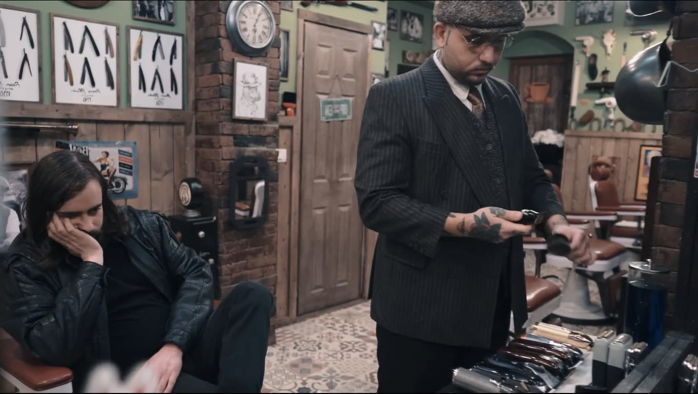
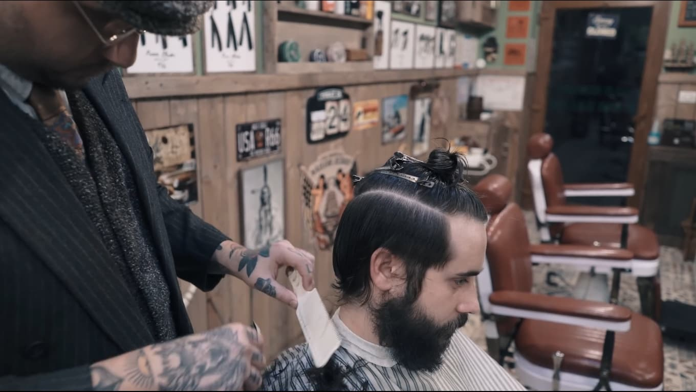
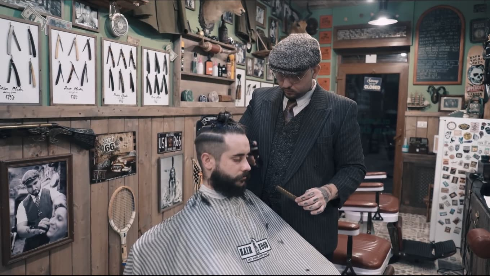
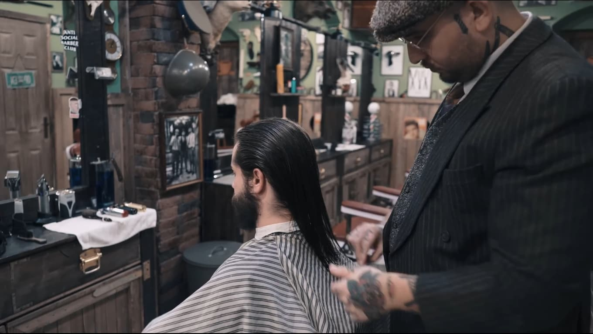

Seu corte onde você estiver
Sem fila, sem sair de casa, sem perder a tarde. Levo a barbearia até você, ou te atendo na Rota 020. Você escolhe.
Um barbeiro só seu
Nem todo mundo tem uma tarde inteira pra passar esperando a vez.
Sou o João Lucas, barbeiro em Sobradinho. Atendo na Barbearia Rota 020 e também na casa dos meus clientes. Aqui o corte é feito com calma, do jeito que combina com a sua cabeça e com a sua rotina, não com um modelo pronto.
O que eu faço

Corte
Do clássico ao degradê. Cortado do jeito que combina com você, não com um modelo pronto.
Barba
Desenho, alinhamento e acabamento na navalha. Toalha quente pra fechar.

Combos
Corte e barba na mesma sessão. Sai mais em conta e o visual fecha por completo.
Acabamento
Pezinho e sobrancelha. Rápido, pra manter o corte em dia entre uma visita e outra.
Valores conforme o serviço e o local do atendimento. Me chama no WhatsApp que eu te passo certinho.
Quem já passou pela cadeira

Transição limpa da máquina pra tesoura, sem degrau na lateral.

Clássico e alinhado. Serve pro trabalho e pra qualquer ocasião.

Laterais baixas e topo comprido, com contraste bem marcado.
Acabamento na navalha pra deixar o contorno bem definido.
Risco desenhado à mão, do jeito que o cliente pediu.
Desenho, alinhamento e toalha quente pra fechar.
Secador e produto na medida, pro corte ficar em pé o dia todo.
Manutenção rápida pra segurar o corte mais uma semana.
Eu vou até você
Você marca a hora. Eu levo a barbearia.
Levo máquina, navalha, capa e produtos. Só preciso de uma tomada e de um canto com luz. Atendo em Sobradinho e região, inclusive fora do horário comercial, e dá pra atender mais de uma pessoa na mesma visita.
Agendar a domicílioMarque seu horário
Pra marcar horário aqui pelo site é preciso ativar o JavaScript. Sem ele, é só me chamar no WhatsApp que a gente acerta na conversa.
- Serviço
- Onde
- Dia e hora
- Seus dados
O que você quer fazer?
Escolhe o serviço. O detalhe do corte a gente acerta na cadeira.
Onde você quer ser atendido?
Na barbearia ou na sua casa, você escolhe.
Que dia fica bom?
Os horários que aparecem são os que estão livres de verdade.
Só falta você se apresentar
É o que eu preciso pra confirmar o horário com você.
Seu contato fica só comigo, pra confirmar o horário e te lembrar do corte. Não passo pra ninguém e não vendo lista. Como eu cuido dos seus dados. Se o corte for pra menor de idade, quem marca é o pai, a mãe ou o responsável.
Precisa desmarcar um horário?
Digite o código que apareceu quando você agendou, e os 4 últimos números do WhatsApp que você usou. Os dois juntos, pra ninguém desmarcar o horário de outra pessoa.
Dúvida, preço ou detalhe do corte
Se você já sabe o que quer, marcar pelo site leva menos de um minuto. Se preferir conversar antes, sobre preço, sobre o atendimento em casa ou sobre o que dá pra fazer no seu cabelo, é só me chamar.
Barbearia Espaço Rota 020
Quadra 08, Bloco 19, Lote 07, Lojas 1 e 2
Sobradinho · Brasília DF